Bildende Kunst
Bernd Hesse ist wiederholt von bildenden Künstlern gezeichnet und porträtiert worden. Dabei entstanden Arbeiten in unterschiedlichen Techniken und aus unterschiedlichen Anlässen. Einen besonderen Raum nehmen die Illustrationen ein, die im Zusammenhang mit seiner Beschäftigung mit E. T. A. Hoffmann und seinen eigenen literarischen Arbeiten entstanden sind.
Stephan Klenner-Otto – „Schnurrpfeifenkarussell“
Für den Gedichtband Schnurrpfeifenkarussell schuf der Künstler Stephan Klenner-Otto das Cover und die Illustrationen zu sämtlichen Gedichten von Bernd Hesse. Die Arbeiten verbinden Porträts, literarische Figuren und Motive aus der Welt E. T. A. Hoffmanns mit den Gedichten des Bandes.
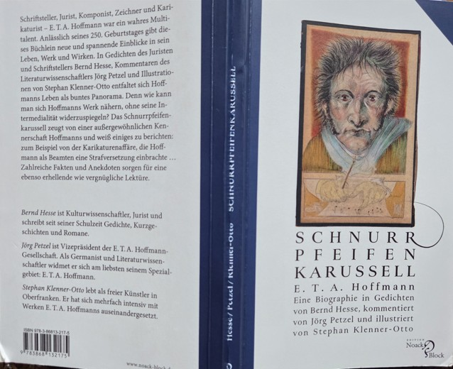
Bereits zum ersten Gedicht des Bandes, „E. T. A. Hoffmann – leidend am Leben Hoffnung geschöpft“, findet sich auf Seite 8 eine Illustration, in der Stephan Klenner-Otto Bernd Hesse porträtiert. Rechts unten erscheint zugleich die Titelfigur aus E. T. A. Hoffmanns Roman Klein Zaches, genannt Zinnober. Die Gegenüberstellung zeigt zunächst die ursprüngliche Arbeit und daneben ihre Verwendung im gedruckten Buch.
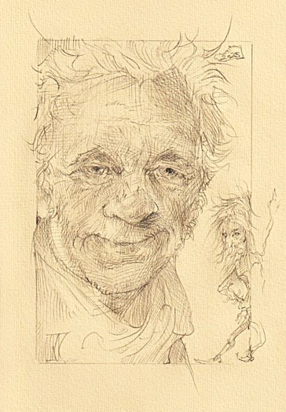
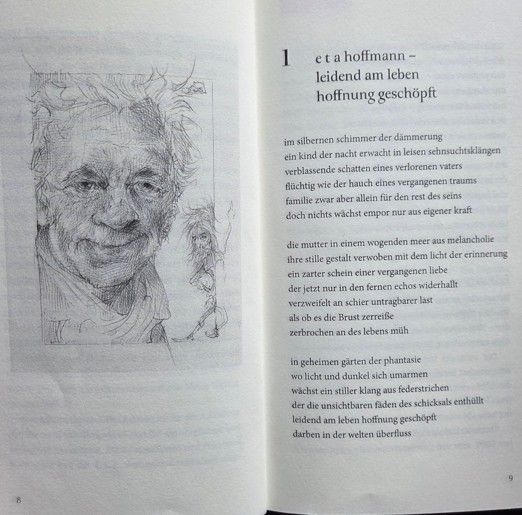
Eine weitere Arbeit Klenner-Ottos führt mehrere Beteiligte des Schnurrpfeifenkarussells zusammen. Von links sind Bernd Hesse und Jörg Petzel zu sehen; rechts oben hat Stephan Klenner-Otto sich selbst porträtiert. Vom rechten Bildrand blickt Kapellmeister Kreisler, E. T. A. Hoffmanns literarisches Alter Ego, in die Szenerie. Im Buch erscheint die Illustration auf Seite 52 neben dem Gedicht „Der Beginn, das Ende in sich birgt“.
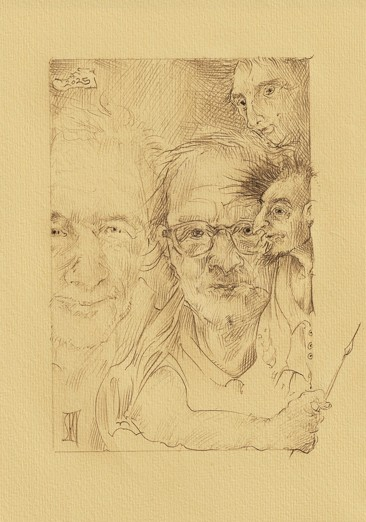
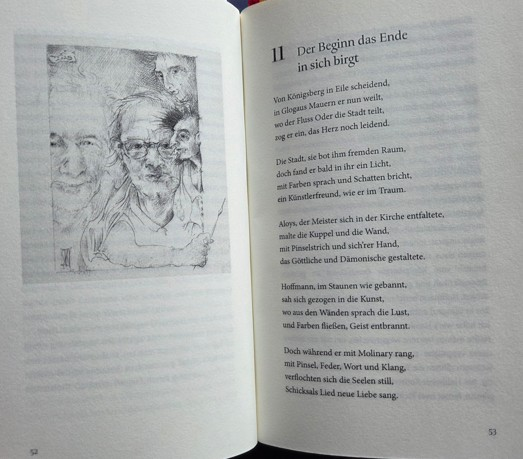
Linolschnitt
Der Dresdner Künstler Steffen Büchner fertigte einen Druck nach einem Linolschnitt mit dem Porträt Bernd Hesses. Die Arbeit fand auch Eingang in die Wikipedia-Seite des Autors.
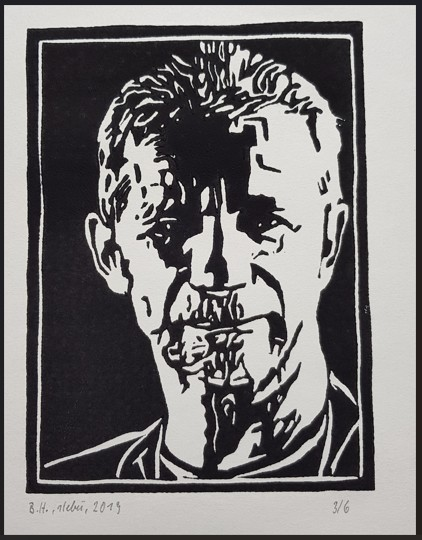
Steffen Faust – Bernd Hesse, E. T. A. Hoffmann und Jörg Petzel
Der insbesondere durch seine Illustrationen zu E. T. A. Hoffmann bekannte Zeichner Steffen Faust schuf 2024 eine weitere Arbeit. Sie entstand als Dank an Bernd Hesse und Jörg Petzel für die Organisation einer Reise nach Polen zu Wohn- und Arbeitsorten E. T. A. Hoffmanns.
Die Zeichnung zeigt im Profil links Bernd Hesse und rechts Jörg Petzel. Über ihnen erscheint E. T. A. Hoffmann, umgeben von beschriebenen Papierblättern – eine bildnerische Verbindung der beiden Hoffmann-Forscher mit dem Dichter, dessen Leben und Werk ihrer gemeinsamen Arbeit zugrunde liegt.
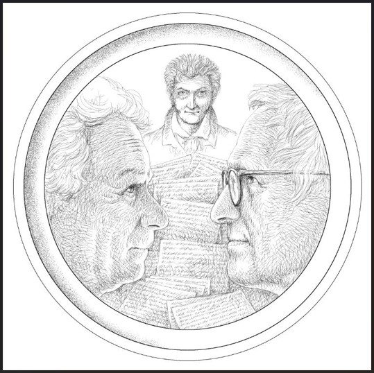
Judith Schwietzke – Porträtstempel Bernd Hesse
Die Berliner Künstlerin Judith Schwietzke, die ihre Arbeiten mit „Judiesein“ signiert und unter diesem Namen auch ihre Künstlerseite führt, fertigte einen Stempel mit dem Porträt von Bernd Hesse.
Der Schriftsteller verwendet den Porträtstempel bei Lesungen und Signierstunden. So ist aus dem kleinen Kunstwerk zugleich ein persönliches Signierzeichen geworden.
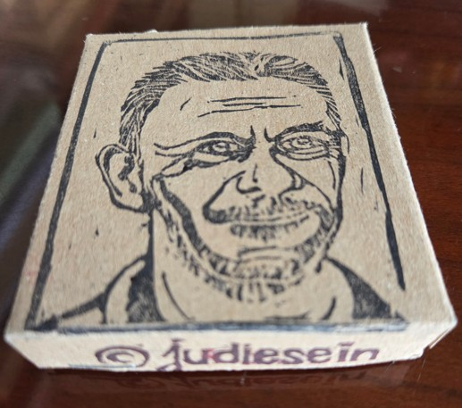
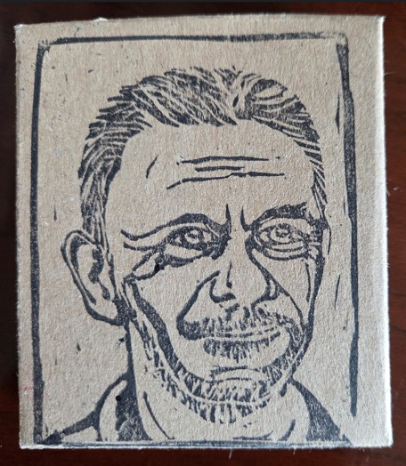
Der Porträtstempel im Gebrauch
Bei Lesungen und Signierstunden ist der von Judith Schwietzke geschaffene Stempel regelmäßig im Gebrauch. Danach hat der Autor nicht selten schwarze Finger.
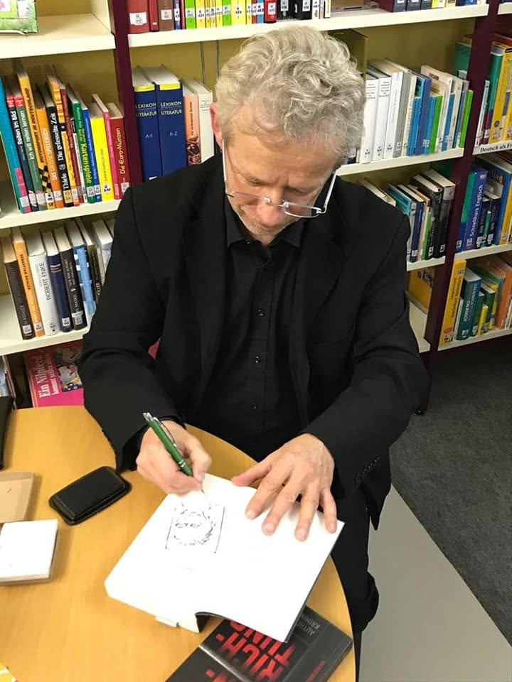
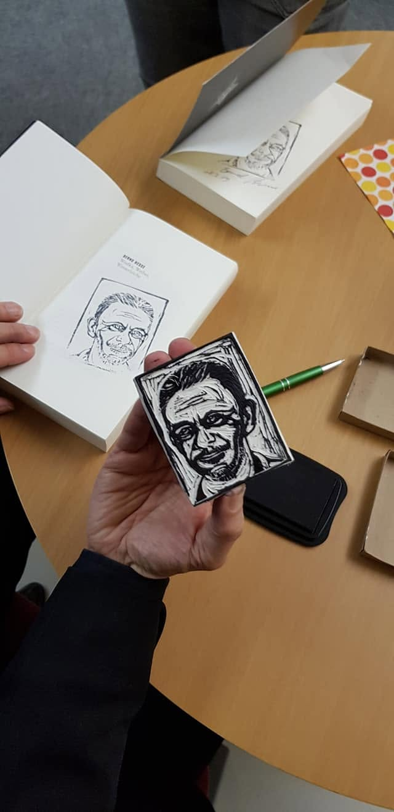
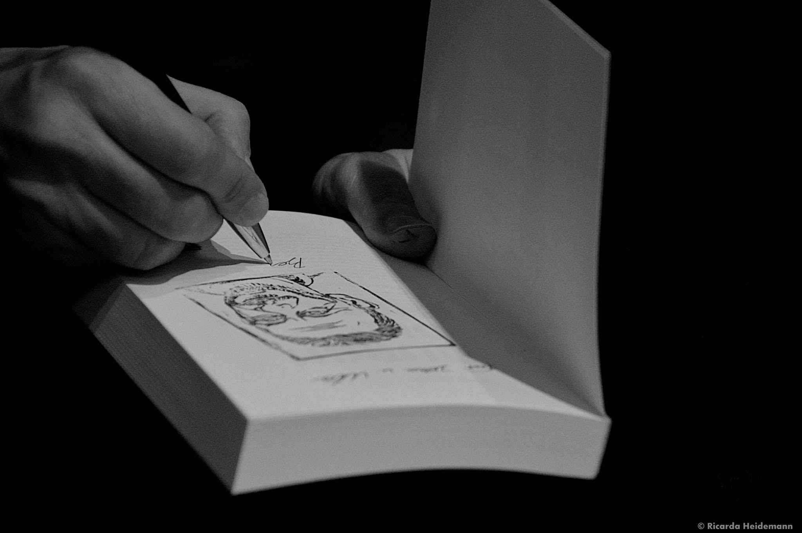
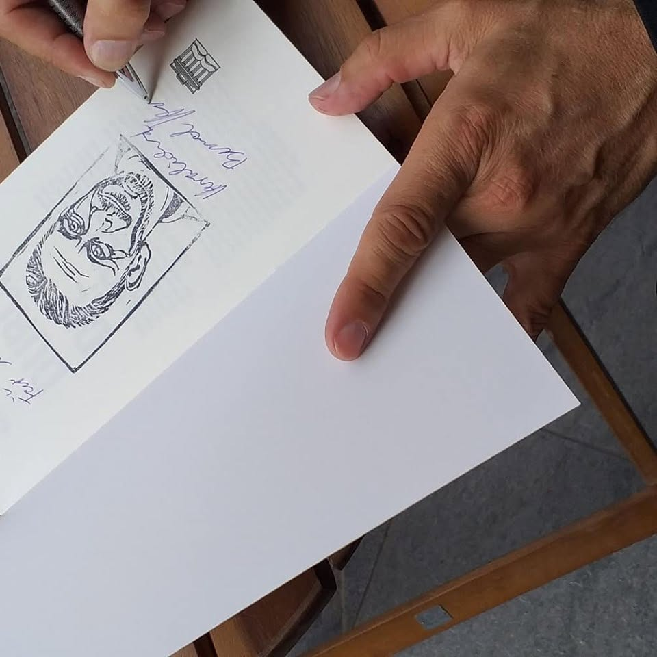
Der Porträtstempel bei Lesungen und Signierstunden im Einsatz.